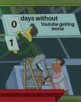

An anonymous reader shares a report: A hacking of the Nobel organization's computer systems is the most likely cause of last year's leak of Nobel Peace Prize laureate Maria Corina Machado's name, according to the results of an investigation [non-paywalled source]. An individual or a state actor may have illegally gained access in a cyber breach, the Norwegian Nobel Institute said on Friday after concluding an internal investigation assisted by security authorities.
The leak had triggered an unusual betting surge on Machado at the Polymarket platform hours before she was unveiled as the award recipient in October. The Venezuelan opposition leader hadn't previously been considered a favorite for the 2025 prize.
"We still think that the digital domain is the main suspect," said Kristian Berg Harpviken, director of the Oslo-based institute, an administrative arm of the Nobel Committee that awards the prize. The institute has decided against filing for a police investigation given "the absence of a clear theory," he said in an interview in Oslo.
Read more of this story at Slashdot.
An anonymous reader shares a report: Amazon is in talks to invest up to $50 billion in OpenAI, according to people familiar with the matter, in what would be a giant bet on the hot AI startup. The ChatGPT maker is seeking up to $100 billion in new capital from investors, a round that could value it at as much as $830 billion, The Wall Street Journal previously reported.
Andy Jassy, Amazon's chief executive, is leading the negotiations with OpenAI CEO Sam Altman, according to some of the people. The exact shape of a deal, should one be reached, could still change, the people said. Investing tens of billions of dollars in OpenAI could make Amazon the biggest contributor in the AI company's ongoing fundraising round. SoftBank is in talks to invest up to $30 billion more in OpenAI as part of the round, adding to the Japanese conglomerate's already large stake in the startup.
Read more of this story at Slashdot.
An anonymous reader shares a report: Microsoft's PowerToys team is contemplating building a top menu bar for Windows 11, much like Linux, macOS, or older versions of Windows. The menu bar, or Command Palette Dock as Microsoft calls it, would be a new optional UI that provides quick access to tools, monitoring of system resources, and much more.
Microsoft has provided concept images of what it's looking to build, and is soliciting feedback on whether Windows users would use a PowerToy like this. "The dock is designed to be highly configurable," explains Niels Laute, a senior product manager at Microsoft. "It can be positioned on the top, left, right, or bottom edge of the screen, and extensions can be pinned to three distinct regions of the dock: start, center, and end."
Read more of this story at Slashdot.
Mike Swanson, commenting on modern software's intrusive, attention-seeking behavior: What if your car worked like so many apps? You're driving somewhere important...maybe running a little bit late. A few minutes into the drive, your car pulls over to the side of the road and asks:
"How are you enjoying your drive so far?"
Annoyed by the interruption, and even more behind schedule, you dismiss the prompt and merge back into traffic.
A minute later it does it again.
"Did you know I have a new feature? Tap here to learn more."
It blocks your speedometer with an overlay tutorial about the turn signal. It highlights the wiper controls and refuses to go away until you demonstrate mastery.
Ridiculous, of course.
And yet, this is how a lot of modern software behaves. Not because it's broken, but because we've normalized an interruption model that would be unacceptable almost anywhere else.
Read more of this story at Slashdot.
An anonymous reader quotes a report from Variety: In the future, studios that use synthetic actors in place of humans might have to pay a royalty into a union fund. That's one of the ideas kicking around as SAG-AFTRA prepares to sit down with the studios on Feb. 9. Artificial intelligence was central to the 2023 actors strike, and it's only gotten more urgent since. Social media is awash in slop, while user-made videos of Leia and Elsa are soon to debut on Disney+. And then there's Tilly Norwood -- the digital creation that crystallized AI fears last fall. Though SAG-AFTRA won some AI protections in the strike, it can't stop Tilly and her ilk from taking actors' jobs. As negotiations with studios begin early ahead of the June contract deadline, AI remains the most existential concern. Actors are also pushing to revisit streaming residuals, arguing that current "success bonuses" fall far short of the rerun-based income that once sustained middle-class careers. They also note the strain caused from long streaming hiatuses, exclusivity clauses, and self-taped auditions.
Read more of this story at Slashdot.
0
A large Swedish study of 100,000 women found that using AI to assist radiologists reading mammograms reduced the rate of aggressive "interval" breast cancers by 12%. CBC News reports: For the study -- published in Thursday's issue of the medical journal The Lancet -- more than 100,000 women had mammography screenings. Half were supported by AI and the rest had their mammograms reviewed by two different radiologists, a standard practice in much of Europe known as double reading. It is not typically used in Canada, where usually one radiologist checks mammograms.
The study looked at the rates of interval cancer, the term doctors use for invasive tumors that appear between routine mammograms. They can be harder to detect and studies have shown that they are more likely to be aggressive with a poorer prognosis. The rate of interval cancers decreased by 12 percent in the groups where the AI screening was implemented, the study showed. [...] Throughout the two-year study, the mammograms that were supported by AI were triaged into two different groups. Those that were determined to be low risk needed only one radiologist to examine them, while those that were considered high risk required two. The researchers reported that numerically, the AI-supported screening resulted in 11 fewer interval cancers than standard screening (82 versus 93, or 12 per cent).
"This is really a way to improve an overall screening test," [said lead author, Dr. Kristina Lang]. She acknowledged that while the study found a decrease in interval cancer, longer-term studies are needed to find out how AI-supported screening might impact mortality rates. The screenings for the study all took place at one centre in Sweden, which the researchers acknowledged is a limitation. Another is that the race and ethnicity of the participants were not recorded. The next step, Lang said, will be for Swedish researchers to determine cost-effectiveness.
Read more of this story at Slashdot.
An anonymous reader quotes a report from the Guardian: The UK could introduce a universal basic income (UBI) to protect workers in industries that are being disrupted by AI, the investment minister Jason Stockwood has said. "Bumpy" changes to society caused by the introduction of the technology would mean there would have to be "some sort of concessionary arrangement with jobs that go immediately", Lord Stockwood said. The Labour peer told the Financial Times: "Undoubtedly we're going to have to think really carefully about how we soft-land those industries that go away, so some sort of [universal basic income], some sort of lifelong mechanism as well so people can retrain."
A universal basic income is not part of official government policy, but when asked whether people in government were considering the need for UBI, Stockwood told the FT: "People are definitely talking about it." [...] While he has previously been a vocal proponent of a wealth tax in the UK, Stockwood told the FT he had not repeated his calls for the government to go further on taxing the rich. However, he added: "If you make your money and the first thing you do is you speak to a tax adviser to ask: 'Where can we pay the lowest tax?' we don't want those people in this country, I'd suggest, because you're not committed to your communities and the long-term success in this country."
Read more of this story at Slashdot.
Comcast's attempt to slow broadband customer losses still isn't stopping the bleeding as fiber and fixed wireless competition intensifies. In Q4 2025 alone, Comcast lost 181,000 broadband subscribers, even as it leans harder into wireless bundling and other business lines like Peacock and theme parks. Ars Technica reports: The Q4 net loss is more than the 176,000 loss predicted by analysts, although not as bad as the 199,000-customer loss that spurred [Comcast President Mike Cavanagh's] comment about Comcast "not winning in the marketplace" nine months ago. The Q4 2025 loss reported today is also worse than the 139,000-customer loss in Q4 2024 and the 34,000-customer loss in Q4 2023.
"Subscriber losses were 181,000, as the early traction we are seeing from our new initiatives was more than offset by continued competitive intensity," Comcast CFO Jason Armstrong said during an earnings call today, according to a Motley Fool transcript. Comcast's residential broadband customers dropped to 28.72 million, while business broadband customers dropped to 2.54 million, for a total of 31.26 million.
Armstrong said that average revenue per user grew 1.1 percent, "consistent with the deceleration that we had previewed reflecting our new go-to-market pricing, including lower everyday pricing and strong adoption of free wireless lines." Armstrong expects average revenue per user to continue growing slowly "for the next couple of quarters, driven by the absence of a rate increase, the impact from free wireless lines, and the ongoing migration of our base to simplified pricing." Comcast Connectivity & Platforms chief Steve Croney said the firm is facing "a more competitive environment from fiber" and continued competition from fixed wireless. "The market is going to remain intensely competitive," he said.
Read more of this story at Slashdot.
Longtime Slashdot reader devnulljapan writes: In 2012, Canada passed anti-circumvention law Bill C-11, cut-and-pasted from the U.S. DMCA, in return for access to U.S. markets without tariffs. Trump has tariffed Canada anyway, so Cory Doctorow suggests it sounds like like a good idea to ditch Bill C-11 and turn Canada into a "Disenshittification Nation" and go into the business of "disenshittify[ing] America's defective tech exports." Some of the specific ways Canada could respond include legalize jailbreaking, allow alternative app stores/clients, force companies to offer repair tools, and open firmware that break monopoly lock-ins. Cory's pitch is equal parts economic strategy (capture the rents Big Tech extracts) and national security (reduce dependence on U.S. tech stacks that can be switched off or weaponized).
Read more of this story at Slashdot.
A new study [PDF] examining the United States between 1850 and 1920 found that expanded market access -- driven largely by railroad expansion -- made Americans more trusting of strangers and more outward-looking, but weakened family-based care for the vulnerable.
Researchers Max Posch of the University of Exeter and Itzchak Tzachi Raz of Hebrew University compared places and people gaining different levels of commercial connectivity. In better-connected regions, Americans became more likely to marry outside their local communities, and parents more likely to pick nationally common names for children. Trust toward others rose, as measured through language in local newspapers.
The researchers used multiple tests to rule out the possibility that these shifts simply reflected places getting richer. The cultural changes were concentrated among migrants in trade-exposed industries; workers in construction and entertainment showed no effect. But market access also meant orphans, the disabled, and the elderly became less likely to be cared for by relatives at home.
Read more of this story at Slashdot.
Apple's call-screening feature, introduced in iOS 26 last year, was designed to combat the more than 2 billion robocalls placed to Americans every month, but as WSJ is reporting, it is now creating friction for the rich and powerful who find themselves subjected to automated interrogation when dialing from unrecognized numbers.
The feature uses an automated voice to ask unknown callers for their names and reasons for calling, transcribes the responses, and lets recipients decide whether to answer -- essentially giving everyone a pocket-sized executive assistant.
Venture capitalist Bradley Tusk said his first reaction when encountering call screening is irritation, though he understands the necessity given the spam problem. Ben Schaechter, who runs cloud-cost management company Vantage, said the feature "dramatically changed my life" after his personal number ended up in founding paperwork and attracted endless sales calls.
Read more of this story at Slashdot.
The UK government paid consulting firm PwC $5.65 million to build its new AI Skills Hub, a site meant to help 10 million workers gain AI skills by 2030 that functions largely as a bookmarking service, directing users to external training courses that already existed before the contract was awarded.
The hub links to platforms like Salesforce's free Trailhead learning system rather than offering original educational content. PwC has acknowledged the site does not fully meet accessibility standards. The platform also contains factual errors in its course on AI and intellectual property, which references "fair use" -- a legal doctrine specific to the U.S. -- rather than the UK's "fair dealing" framework.
Read more of this story at Slashdot.
0
An anonymous reader shares a report: One-third of U.S. video game industry workers say they were laid off over the past two years, according to a new survey conducted by the organizers behind the newly revamped Game Developers Conference (GDC). Based on responses from more than 2,300 gaming industry professionals, with surveys "customized for each participant group, ensuring that developers, marketers, executives, investors and others answered questions most relevant to them," the 2026 State of the Game Industry Report found that 33% of respondents in the U.S. were laid off in the past two years. AI use has grown to 36% of respondents, but sentiment has turned sharply negative: 52% now believe generative AI is harming the industry, compared to 30% last year and 18% in 2024. On the labor front, 82% of US respondents support unionization for game workers, and 62% said they're not in a union but interested in joining one. No respondents between 18 and 24 years old opposed unionization.
Read more of this story at Slashdot.
DuckDuckGo recently asked its users how they felt about AI in search. The answer has come back loud and clear: more than 90% of the 175,354 people who voted said they don't want it.
The privacy-focused search engine has since set up two versions of its tool: noai.duckduckgo.com for the AI-averse and yesai.duckduckgo.com for the curious. Users can also tweak settings on the main site to disable AI summaries, AI-generated images, and the Duck.ai chatbot individually.
Read more of this story at Slashdot.
Longtime Slashdot reader schwit1 shares a report from CBS News: A former Google engineer has been found guilty on multiple federal charges for stealing the tech giant's trade secrets on artificial intelligence to benefit Chinese companies he secretly worked for, federal prosecutors said. According to the U.S. Attorney's Office for the Northern District of California, a jury on Thursday convicted Linwei Ding on seven counts of economic espionage and seven counts of theft of trade secrets, following an 11-day trial. The 38-year-old, also known as Leon Ding, was hired by Google in 2019 and was a resident of Newark.
According to evidence presented at trial, Ding stole more than 2,000 pages of confidential information containing Google AI trade secrets between May 2022 and April 2023. He uploaded the information to his personal Google Cloud account. Around the same time, Ding secretly affiliated himself with two Chinese-based technology companies. Around June 2022, prosecutors said Ding was in discussions to be the chief technology officer for an early-stage tech company. Several months later, he was in the process of founding his own AI and machine learning company in China, acting as the company's CEO. Prosecutors said Ding told investors that he could build an AI supercomputer by copying and modifying Google's technology.
In late 2023, prosecutors said Ding downloaded the trade secrets to his own personal computer before resigning from Google. According to the superseding indictment, Google uncovered the uploads after finding out that Ding presented himself as CEO of one of the companies during an Beijing investor conference. Around the same time, Ding told his manager he was leaving the company and booked a one-way flight to Beijing. "Silicon Valley is at the forefront of artificial intelligence innovation, pioneering transformative work that drives economic growth and strengthens our national security. The jury delivered a clear message today that the theft of this valuable technology will not go unpunished," U.S. Attorney Craig Missakian said in a statement.
Read more of this story at Slashdot.
Anthropic : Anthropic details how NASA engineers used Claude to plot out the route for Perseverance rover to navigate a ~400 meter path on the Martian surface — The first AI-planned drive on another planet. — EXPLORING NEW PLANETS means that you're always operating in the past.
Mark Gurman / Bloomberg : Sources: Apple lost at least four more AI researchers in recent weeks, two of whom went to Meta and one to DeepMind; a top Siri executive left for DeepMind — Apple Inc. has lost at least four more of its artificial intelligence researchers in recent weeks in addition to a top Siri executive …
Zaheer Kachwala / Reuters : Shares of major gaming companies plunge after Google released Project Genie, which lets users create interactive worlds; Unity is down ~21% and Take-Two ~10% — Shares of videogame companies fell sharply in afternoon trading on Friday after Alphabet's Google (GOOGL.O) rolled …
Simon Willison / Simon Willison's Weblog : A look at Moltbook, a social network where OpenClaw assistants interact autonomously, as they discuss consciousness and identity, technical tips, and more — The hottest project in AI right now is Clawdbot, renamed to Moltbot, renamed to OpenClaw. It's an open source implementation …
Lucas Ropek / TechCrunch : Anthropic expands its agentic plugins, which let enterprise users automate department-specific workflows, from Claude Code to its new general-use tool Cowork — Earlier this month, Anthropic launched Cowork, a new agentic tool designed to take the benefits of its AI coding assistant Claude Code …
@tbpn : Gurman: internal development at Apple “runs on Anthropic at this point”, Apple wanted to rebuild Siri around Claude, but Anthropic's terms were too steep — Bloomberg's @markgurman says that even though Apple partnered with Google Gemini for Siri, they actually run their business on Anthropic. “Apple runs on Anthropic at this point. Anthropic is powering a lot of the stuff Apple's doing internally in terms of product development and [video]
Sarah Perez / TechCrunch : Bluesky releases its first transparency report: users rose 60% in 2025 to 41.2M, including AT Protocol accounts; moderation reports from users grew 54% to 9.97M — Bluesky released its first transparency report this week documenting the actions taken by its Trust & Safety team and the results …
Ian Krietzberg / Puck : Poetiq, which leverages existing LLMs to create “expert agents” for specific tasks, and spent just $40K to achieve high ARC-AGI-2 scores, raised a $45.8M seed — Poetiq, a less-than-one-year-old A.I. startup just crushed the ARC A.G.I. benchmark, beating Anthropic and Google with only six people and $40,000.
Danny Park / The Block : Binance says it will convert $1B in stablecoin reserves held in its SAFU into bitcoin over the next 30 days, as BTC falls to its lowest level since November — Partner offers — Quick Take — Binance announced that it will turn its $1 billion SAFU fund into bitcoin over the next 30 days …
Maria Curi / Axios : Pro-AI super PAC Leading the Future has raised $125M+ in 2025, including from a16z and Greg Brockman, to try to shape the US midterms and federal AI regulation — Pro-AI super PAC Leading the Future has raised more than $125 million to try to shape the 2026 midterms and the future of federal AI regulation.
Ron Schmelzer / Forbes : Peter Steinberger rebrands his AI agent project to OpenClaw, its second name change after Anthropic forced a shift from Clawdbot to Moltbot — What began as a side project that quietly drew more than 100,000 GitHub stars has turned into one of the most viral experiments in AI.
Iain Martin / Forbes : Sources: Granola, which makes an AI-based note-taking app, aims to raise $100M+ led by Index Ventures at a $1B+ valuation, up from a $250M valuation in May 2025 — The London-based AI startup aims to raise a new round of at least $100 million led by Index Ventures, making the popular note-taking app the latest AI unicorn.
Bloomberg : Costco will use Instacart's white-label e-commerce service to offer grocery delivery in Spain and France, extending their partnership beyond North America — Costco Wholesale Corp. will use Instacart's technology to power online grocery ordering in Spain and France, extending …
Samantha Kelly / Bloomberg : Oura CEO Tom Hale says the company has no plans to abandon its subscription model, even as rivals experiment with cheaper hardware and no recurring fees — Oura Health Oy, the popular smart ring maker, has no plans to abandon its subscription-based business model even as rivals experiment with cheaper hardware and no recurring fees.
Anastasia Santoreneos / Forbes Australia : Checkbox, an AI startup that aims to automate legal intake, raised a $23M Series A led by Touring Capital; Checkbox has 100+ clients, including SAP and PepsiCo — Checkbox, an Australian-founded AI startup that wants to build an AI ‘front door’ for in-house legal teams, will use the cash to build out its automated workflows.